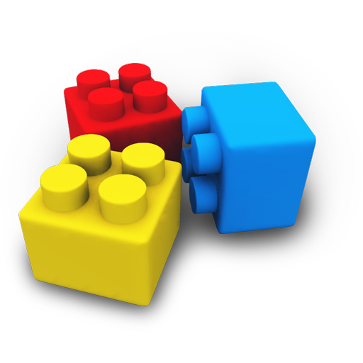
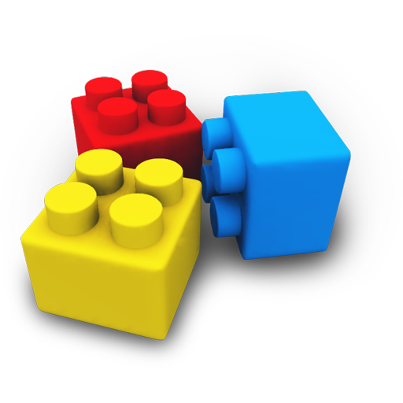
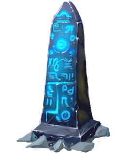
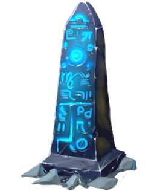

RabbitWeb-School.ru
"Делаем обучение доступным!"

Scratch - это среда программирования позволяющая детям создавать собственные интерактивные проекты: игры, мультфильмы, обучающие системы, комиксы и т.д. Язык программирования, который создавался специально для детей и подростков (8 – 16 лет). Позволяющий технологически выразить себя в компьютерном творчестве. Одно из преимуществ языка – это интуитивная понятность и простота в использовании.
Дети, изучавшие Scratch, намного легче переходят на более сложные языки программирования, такие как Python или JavaScript.
 

Язык программирования Scratch похож, как вы могли уже заметить на конструктор "Лего". В среде Скретч пользователь собирает из отдельных блоков свою программу.
Простая форма позволяет даже самым маленьким из начинающих программистов приобщаться к программированию, превращая обучение в увлекательную игру. В результате выполнения простых команд может складываться сложная модель, в которой будут взаимодействовать множество объектов, наделенных различными свойствами.
Начальный уровень программирования настолько прост и доступен, что Scratch рассматривается в качестве средства обучения не только у подростков, но и детей от 7 - 8 лет.
На практических занятиях, отработаем применение и переключение между каждым блок в отдельности, так же разучим назначение блоков разных типов, которые имеют различные функции в программе. Некоторые из них двигают спрайты, некоторые управляют звуками, некоторые определяют, что должно произойти какое-то действие.
Освоим навыки:
Познакомимся с:


 



Спрайт - это основной элемент в Scratch, каждая программа состоит из спрайтов и скриптов для управления ими. Спрайт можно научить реагировать на другие спрайты и на действия пользователя программы.
Например:
В проекте может быть много спрайтов, и у каждого спрайта могут быть свои скрипты. В процессе обучения мы научимся совмещать и не путать, к камому из спрайтов какой скрипт добавлять, и оперативно переключаться между спрайтами, и находить индивидуальный подход к возможным затруднениям в создании проекта.
| Лабиринт | Мультфильм | Диалог с персонажем |
| Поздравительная открытка | Грибомания | Танчики |
| Пинг-понг | Рикошет | Найди предмет |
| Пятнашки | 2048 | Морской бой |
| Шахматы | Змейка | Фехтование |
| Снежки | Увернись от яблока | Защита башни |
| Атака зомби | Шашки | Платформер |
| Flappy Bird | Angry Birds | Дино из Google Chrome |
| Угадай число | Paint | Калькулятор |
| Ковбои | Викторина | Поле Чудес |
| Виселица | Стратегия | Стрелялка от первого лица |
| Pacman | Симулятор Windows | Крестики-нолики |
| Решатель квадратных уравнений | Онлайн-игра | Сапёр |
| Дудл Джамп | Авиасимулятор | Гонки |
| Волк ловит яблоки | Стройка из тетриса | Карточная игра "Дурак" |
| Guitar Hero | Квест | Весёлая ферма |
| Угадай мелодию | Симулятор кафе | Haxball |
| Офисный баскетбол | Carrot Rabbit | Три в ряд |
| Точки | Найди пару |


+7(499)394-6887
+7(929)956-3812
Россия, г. Москва
ул. Салтыковская дом 15
office@rabbitweb-school.ru
сайт создан в RabbitWeb.ru©
o